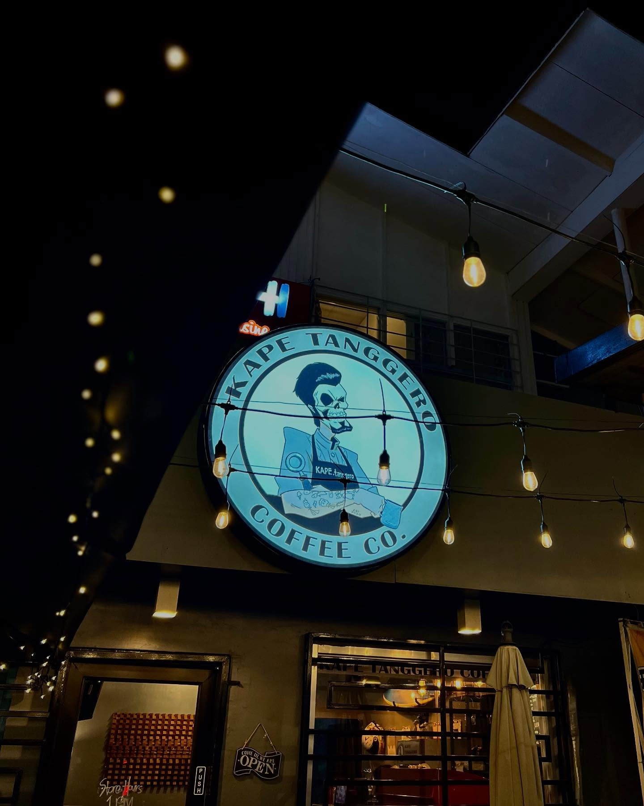
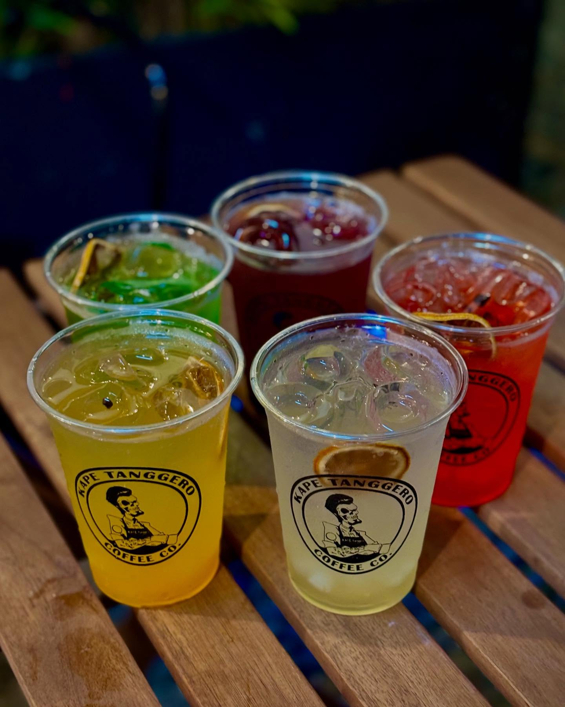
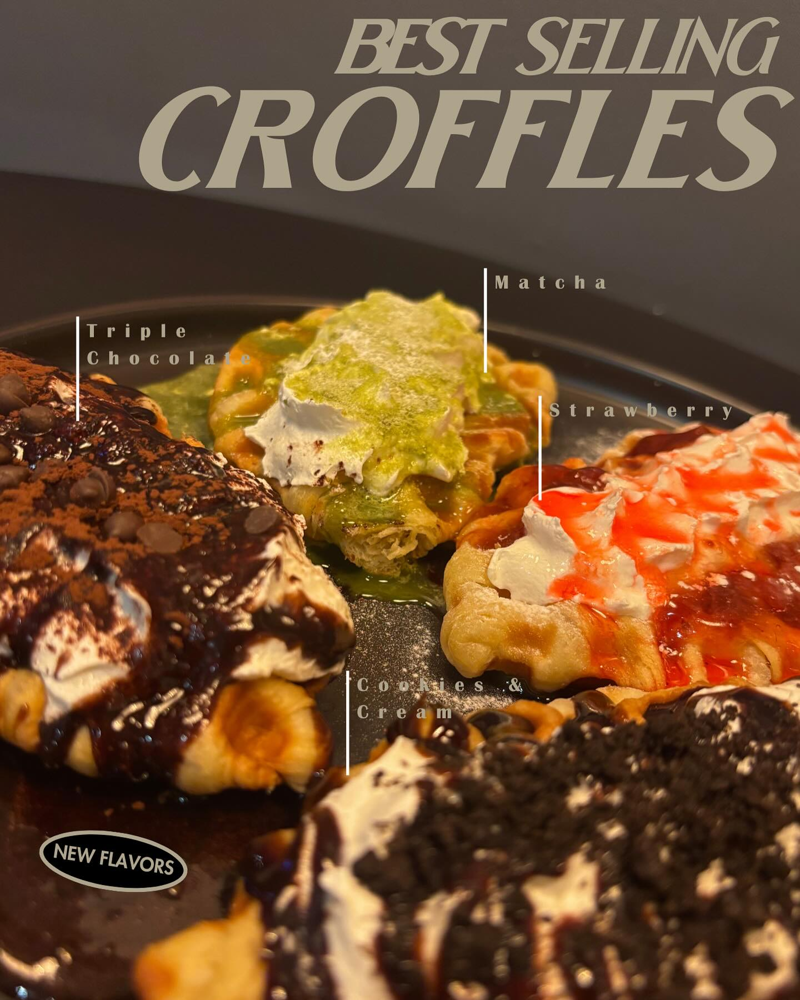
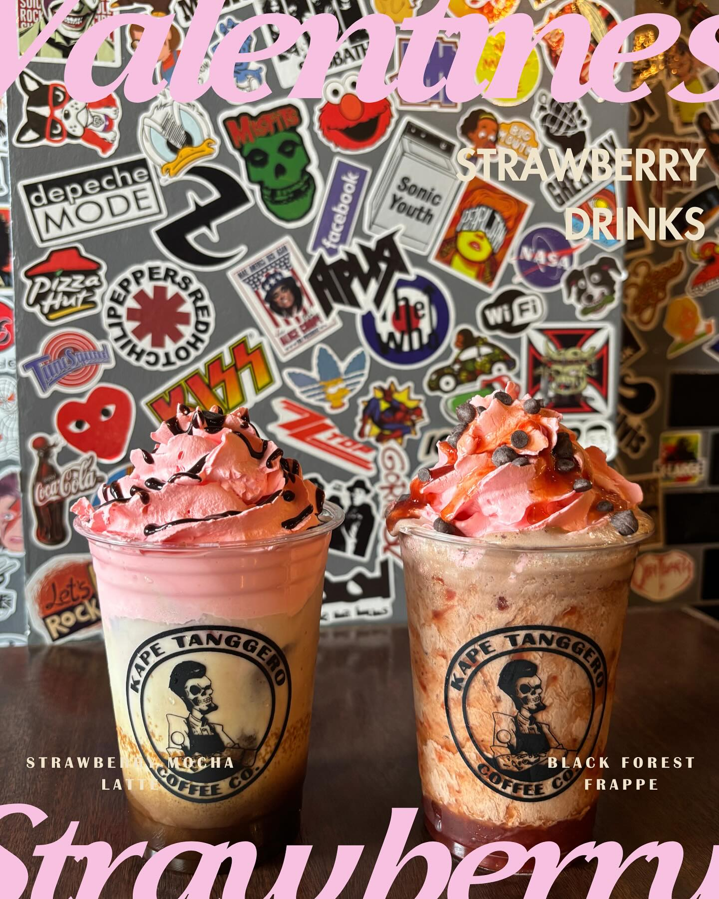
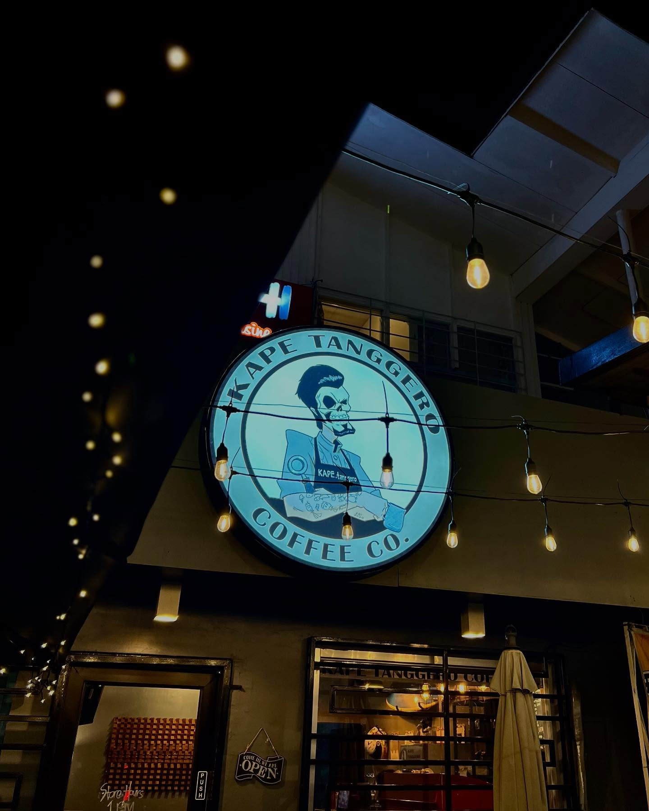
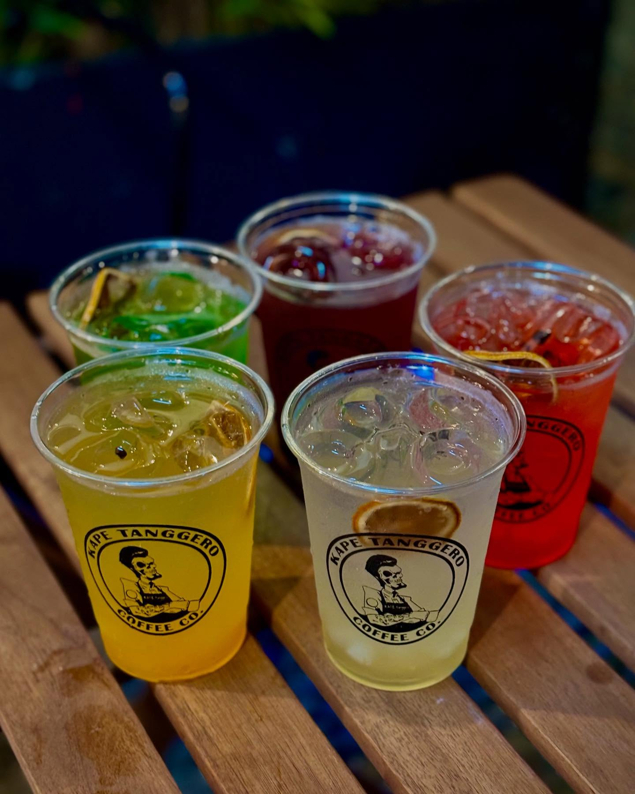
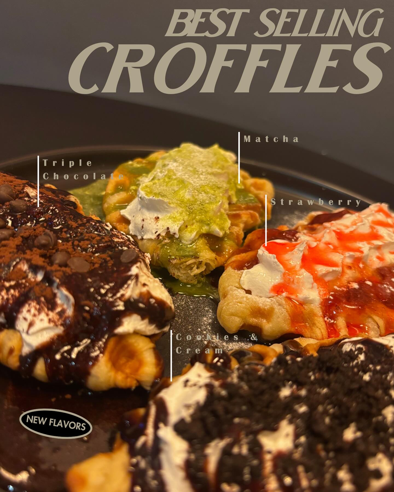
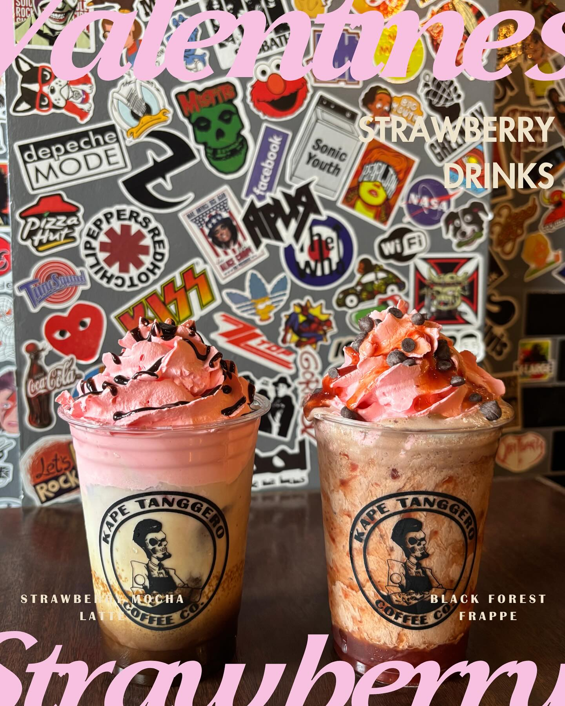

WEATHER
Uwan re-enters PAR; Signal No. 1 up in Batanes
By: Zacarian Sarao - Reporter / @zacariansINQ
INQUIRER.net / 06:08 PM November 12, 2025
MANILA, Philippines — Tropical Storm Uwan (international name: Fung Wong) re-entered the Philippine area of responsibility (PAR) on Wednesday afternoon, said the state weather bureau. Despite re-entering PAR, Uwan is no longer expected to affect most parts of the country as Tropical Cyclone Wind Signal No. 1 is raised only in the Batanes Islands.
According to PAGASA’s latest bulletin, Uwan was last spotted 210 kilometers northwest of Itbayat, Batanes.
More
 






